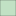
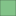

<!doctype html>
<html lang="en">
    <head>
        <meta charset="utf-8">
        <meta http-equiv="X-UA-Compatible" content="IE=edge">
        <meta name="viewport" content="initial-scale=1,user-scalable=no,maximum-scale=1,width=device-width">
        <meta name="mobile-web-app-capable" content="yes">
        <meta name="apple-mobile-web-app-capable" content="yes">
        <link rel="stylesheet" href="css/leaflet.css">
        <link rel="stylesheet" href="css/qgis2web.css"><link rel="stylesheet" href="css/fontawesome-all.min.css">
        <link rel="stylesheet" href="css/leaflet-search.css">
        <link rel="stylesheet" href="css/leaflet-measure.css">
        <style>
        html, body, #map {
            width: 100%;
            height: 100%;
            padding: 0;
            margin: 0;
        }
        </style>
        <title>Canopy Cover in Inner Melbourne</title>
    </head>
    <body>
        <div id="map">
        </div>
        <script src="js/qgis2web_expressions.js"></script>
        <script src="js/leaflet.js"></script>
        <script src="js/leaflet.rotatedMarker.js"></script>
        <script src="js/leaflet.pattern.js"></script>
        <script src="js/leaflet-hash.js"></script>
        <script src="js/Autolinker.min.js"></script>
        <script src="js/rbush.min.js"></script>
        <script src="js/labelgun.min.js"></script>
        <script src="js/labels.js"></script>
        <script src="js/leaflet-measure.js"></script>
        <script src="js/leaflet-search.js"></script>
        <script src="data/CanopyCoveredArea_1.js"></script>
        <script>
        var highlightLayer;
        function highlightFeature(e) {
            highlightLayer = e.target;

            if (e.target.feature.geometry.type === 'LineString') {
              highlightLayer.setStyle({
                color: '#ffff00',
              });
            } else {
              highlightLayer.setStyle({
                fillColor: '#ffff00',
                fillOpacity: 1
              });
            }
            highlightLayer.openPopup();
        }
        var map = L.map('map', {
            zoomControl:true, maxZoom:18, minZoom:13
        }).fitBounds([[-37.85657848261056,144.8792591443639],[-37.76745865871888,145.00888882972689]]);
        var hash = new L.Hash(map);
        map.attributionControl.setPrefix('<a href="https://github.com/tomchadwin/qgis2web" target="_blank">qgis2web</a> &middot; <a href="https://leafletjs.com" title="A JS library for interactive maps">Leaflet</a> &middot; <a href="https://qgis.org">QGIS</a>');
        var autolinker = new Autolinker({truncate: {length: 30, location: 'smart'}});
        var measureControl = new L.Control.Measure({
            position: 'topleft',
            primaryLengthUnit: 'meters',
            secondaryLengthUnit: 'kilometers',
            primaryAreaUnit: 'sqmeters',
            secondaryAreaUnit: 'hectares'
        });
        measureControl.addTo(map);
        document.getElementsByClassName('leaflet-control-measure-toggle')[0]
        .innerHTML = '';
        document.getElementsByClassName('leaflet-control-measure-toggle')[0]
        .className += ' fas fa-ruler';
        var bounds_group = new L.featureGroup([]);
        function setBounds() {
        }
        map.createPane('pane_Basemap_0');
        map.getPane('pane_Basemap_0').style.zIndex = 400;
        var layer_Basemap_0 = L.tileLayer('https://a.basemaps.cartocdn.com/light_all/{z}/{x}/{y}.pn', {
            pane: 'pane_Basemap_0',
            opacity: 1.0,
            attribution: '',
            minZoom: 13,
            maxZoom: 18,
            minNativeZoom: 0,
            maxNativeZoom: 22
        });
        layer_Basemap_0;
        map.addLayer(layer_Basemap_0);
        function pop_CanopyCoveredArea_1(feature, layer) {
            layer.on({
                mouseout: function(e) {
                    for (i in e.target._eventParents) {
                        e.target._eventParents[i].resetStyle(e.target);
                    }
                    if (typeof layer.closePopup == 'function') {
                        layer.closePopup();
                    } else {
                        layer.eachLayer(function(feature){
                            feature.closePopup()
                        });
                    }
                },
                mouseover: highlightFeature,
            });
            var popupContent = '<table>\
                    <tr>\
                        <th scope="row">SA1 Code</th>\
                        <td>' + (feature.properties['sa1_code21'] !== null ? autolinker.link(feature.properties['sa1_code21'].toLocaleString()) : '') + '</td>\
                    </tr>\
                    <tr>\
                        <th scope="row">District</th>\
                        <td>' + (feature.properties['sa2_name21'] !== null ? autolinker.link(feature.properties['sa2_name21'].toLocaleString()) : '') + '</td>\
                    </tr>\
                    <tr>\
                        <th scope="row">Area (sqkm)</th>\
                        <td>' + (feature.properties['areasqkm21'] !== null ? autolinker.link(feature.properties['areasqkm21'].toLocaleString()) : '') + '</td>\
                    </tr>\
                    <tr>\
                        <th scope="row">Cover (%)</th>\
                        <td>' + (feature.properties['greencover'] !== null ? autolinker.link(feature.properties['greencover'].toLocaleString()) : '') + '</td>\
                    </tr>\
                </table>';
            layer.bindPopup(popupContent, {maxHeight: 400});
        }

        function style_CanopyCoveredArea_1_0(feature) {
            if (feature.properties['greencover'] >= 0.000000 && feature.properties['greencover'] <= 5.000000 ) {
                return {
                pane: 'pane_CanopyCoveredArea_1',
                opacity: 1,
                color: 'rgba(35,35,35,1.0)',
                dashArray: '',
                lineCap: 'butt',
                lineJoin: 'miter',
                weight: 1, 
                fill: true,
                fillOpacity: 1,
                fillColor: 'rgba(255,255,255,1.0)',
                interactive: true,
            }
            }
            if (feature.properties['greencover'] >= 5.000000 && feature.properties['greencover'] <= 10.000000 ) {
                return {
                pane: 'pane_CanopyCoveredArea_1',
                opacity: 1,
                color: 'rgba(35,35,35,1.0)',
                dashArray: '',
                lineCap: 'butt',
                lineJoin: 'miter',
                weight: 1, 
                fill: true,
                fillOpacity: 1,
                fillColor: 'rgba(193,225,196,1.0)',
                interactive: true,
            }
            }
            if (feature.properties['greencover'] >= 10.000000 && feature.properties['greencover'] <= 15.000000 ) {
                return {
                pane: 'pane_CanopyCoveredArea_1',
                opacity: 1,
                color: 'rgba(35,35,35,1.0)',
                dashArray: '',
                lineCap: 'butt',
                lineJoin: 'miter',
                weight: 1, 
                fill: true,
                fillOpacity: 1,
                fillColor: 'rgba(130,195,137,1.0)',
                interactive: true,
            }
            }
            if (feature.properties['greencover'] >= 15.000000 && feature.properties['greencover'] <= 20.000000 ) {
                return {
                pane: 'pane_CanopyCoveredArea_1',
                opacity: 1,
                color: 'rgba(35,35,35,1.0)',
                dashArray: '',
                lineCap: 'butt',
                lineJoin: 'miter',
                weight: 1, 
                fill: true,
                fillOpacity: 1,
                fillColor: 'rgba(67,164,78,1.0)',
                interactive: true,
            }
            }
            if (feature.properties['greencover'] >= 20.000000 && feature.properties['greencover'] <= 45.000000 ) {
                return {
                pane: 'pane_CanopyCoveredArea_1',
                opacity: 1,
                color: 'rgba(35,35,35,1.0)',
                dashArray: '',
                lineCap: 'butt',
                lineJoin: 'miter',
                weight: 1, 
                fill: true,
                fillOpacity: 1,
                fillColor: 'rgba(5,134,19,1.0)',
                interactive: true,
            }
            }
        }
        map.createPane('pane_CanopyCoveredArea_1');
        map.getPane('pane_CanopyCoveredArea_1').style.zIndex = 401;
        map.getPane('pane_CanopyCoveredArea_1').style['mix-blend-mode'] = 'normal';
        var layer_CanopyCoveredArea_1 = new L.geoJson(json_CanopyCoveredArea_1, {
            attribution: '',
            interactive: true,
            dataVar: 'json_CanopyCoveredArea_1',
            layerName: 'layer_CanopyCoveredArea_1',
            pane: 'pane_CanopyCoveredArea_1',
            onEachFeature: pop_CanopyCoveredArea_1,
            style: style_CanopyCoveredArea_1_0,
        });
        bounds_group.addLayer(layer_CanopyCoveredArea_1);
        map.addLayer(layer_CanopyCoveredArea_1);
            var title = new L.Control();
            title.onAdd = function (map) {
                this._div = L.DomUtil.create('div', 'info');
                this.update();
                return this._div;
            };
            title.update = function () {
                this._div.innerHTML = '<h2>Canopy Cover in Inner Melbourne</h2>';
            };
            title.addTo(map);
            var abstract = new L.Control({'position':'topright'});
            abstract.onAdd = function (map) {
                this._div = L.DomUtil.create('div',
                'leaflet-control abstract');
                this._div.id = 'abstract'

                    abstract.show();
                    return this._div;
                };
                abstract.show = function () {
                    this._div.classList.remove("abstract");
                    this._div.classList.add("abstractUncollapsed");
                    this._div.innerHTML = 'SA1 Areas in Inner Melbourne classified by tree canopy cover (percentage of the total area covered by tree canopies). Based on 2021 Open Source data from the City of Melbourne.';
            };
            abstract.addTo(map);
        var baseMaps = {};
        L.control.layers(baseMaps,{'Canopy Covered Area (%)<br /><table><tr><td style="text-align: center;"></td><td>Under 5%</td></tr><tr><td style="text-align: center;"></td><td>5 - 10% </td></tr><tr><td style="text-align: center;"></td><td>10 - 15% </td></tr><tr><td style="text-align: center;"></td><td>15 - 20% </td></tr><tr><td style="text-align: center;"></td><td>Over 20%</td></tr></table>': layer_CanopyCoveredArea_1,"Basemap": layer_Basemap_0,},{collapsed:false}).addTo(map);
        setBounds();
        map.addControl(new L.Control.Search({
            layer: layer_veg_props_1,
            initial: false,
            hideMarkerOnCollapse: true,
            propertyName: 'sa2_name21'}));
        document.getElementsByClassName('search-button')[0].className +=
         ' fa fa-binoculars';
        </script>
    </body>
</html>
